Esteemed members of Budweiser’s leadership team, today, we have the privilege of presenting a comprehensive analysis of beers and brewery data, aimed at uncovering key insights and trends that can significantly impact our business strategy.The purpose of this document is to address lingering questions regarding beer production within the Budweiser brewing company, and to make this information accessible and actionable.
The following presentation highlights both the exciting discoveries we have made and the actionable insights derived from the data. Thank you for your time, and we look forward to empowering Budweiser with data-driven wisdom.
# Libraries Used
library(base)
library(dplyr)##
## Attaching package: 'dplyr'## The following objects are masked from 'package:stats':
##
## filter, lag## The following objects are masked from 'package:base':
##
## intersect, setdiff, setequal, unionlibrary(caret)## Loading required package: ggplot2## Loading required package: latticelibrary(tidyverse)## ── Attaching core tidyverse packages ─────────────────────────────────── tidyverse 2.0.0 ──
## ✔ forcats 1.0.0 ✔ stringr 1.5.0
## ✔ lubridate 1.9.2 ✔ tibble 3.2.1
## ✔ purrr 1.0.2 ✔ tidyr 1.3.0
## ✔ readr 2.1.4## ── Conflicts ───────────────────────────────────────────────────── tidyverse_conflicts() ──
## ✖ dplyr::filter() masks stats::filter()
## ✖ dplyr::lag() masks stats::lag()
## ✖ purrr::lift() masks caret::lift()
## ℹ Use the conflicted package (<http://conflicted.r-lib.org/>) to force all conflicts to become errorslibrary(ggplot2)
library(naniar)
library(class)
library(GGally)## Registered S3 method overwritten by 'GGally':
## method from
## +.gg ggplot2library(tinytex)
options(tinytex.verbose = TRUE)#Breweries <- read.csv("/cloud/project/DS 6306/Datasets/Breweries.csv")
#Beers <- read.csv("/cloud/project/DS 6306/Datasets/Beers (1).csv")
#setwd("/Users/coolp/Desktop/Learning/SMU/Fall 2023/DS 6306/group project 1")
breweries <- read.csv("/Users/coolp/Desktop/Learning/SMU/Fall 2023/DS 6306/group project 1/Breweries.csv")
beers <- read.csv("/Users/coolp/Desktop/Learning/SMU/Fall 2023/DS 6306/group project 1/Beers.csv")
#Brewery Data
breweries<-data.frame(breweries)
# Beer Data
beers<-data.frame(beers)
colnames(beers)[5]="Brew_ID"# Merged Data Sets by brewery ID:
df_bud<-merge(beers,breweries, by="Brew_ID")head(df_bud, 6)## Brew_ID Name.x Beer_ID ABV IBU Style Ounces
## 1 1 Get Together 2692 0.045 50 American IPA 16
## 2 1 Maggie's Leap 2691 0.049 26 Milk / Sweet Stout 16
## 3 1 Wall's End 2690 0.048 19 English Brown Ale 16
## 4 1 Pumpion 2689 0.060 38 Pumpkin Ale 16
## 5 1 Stronghold 2688 0.060 25 American Porter 16
## 6 1 Parapet ESB 2687 0.056 47 Extra Special / Strong Bitter (ESB) 16
## Name.y City State
## 1 NorthGate Brewing Minneapolis MN
## 2 NorthGate Brewing Minneapolis MN
## 3 NorthGate Brewing Minneapolis MN
## 4 NorthGate Brewing Minneapolis MN
## 5 NorthGate Brewing Minneapolis MN
## 6 NorthGate Brewing Minneapolis MNtail(na.omit(df_bud), 6)## Brew_ID Name.x Beer_ID ABV IBU Style
## 2386 545 Pyramid Hefeweizen (2011) 399 0.052 18 Hefeweizen
## 2387 545 Haywire Hefeweizen (2010) 82 0.052 18 Hefeweizen
## 2388 546 Rumspringa Golden Bock 392 0.066 30 Maibock / Helles Bock
## 2389 546 Lancaster German Style Kölsch 195 0.048 28 Kölsch
## 2390 547 Common Sense Kentucky Common Ale 382 0.053 22 American Brown Ale
## 2391 547 Upstate I.P.W. 381 0.065 70 American IPA
## Ounces Name.y City State
## 2386 12 Pyramid Breweries Seattle WA
## 2387 16 Pyramid Breweries Seattle WA
## 2388 12 Lancaster Brewing Company Lancaster PA
## 2389 12 Lancaster Brewing Company Lancaster PA
## 2390 16 Upstate Brewing Company Elmira NY
## 2391 12 Upstate Brewing Company Elmira NY# We visualize the position of all NA values within the dataset
vis_miss(df_bud) 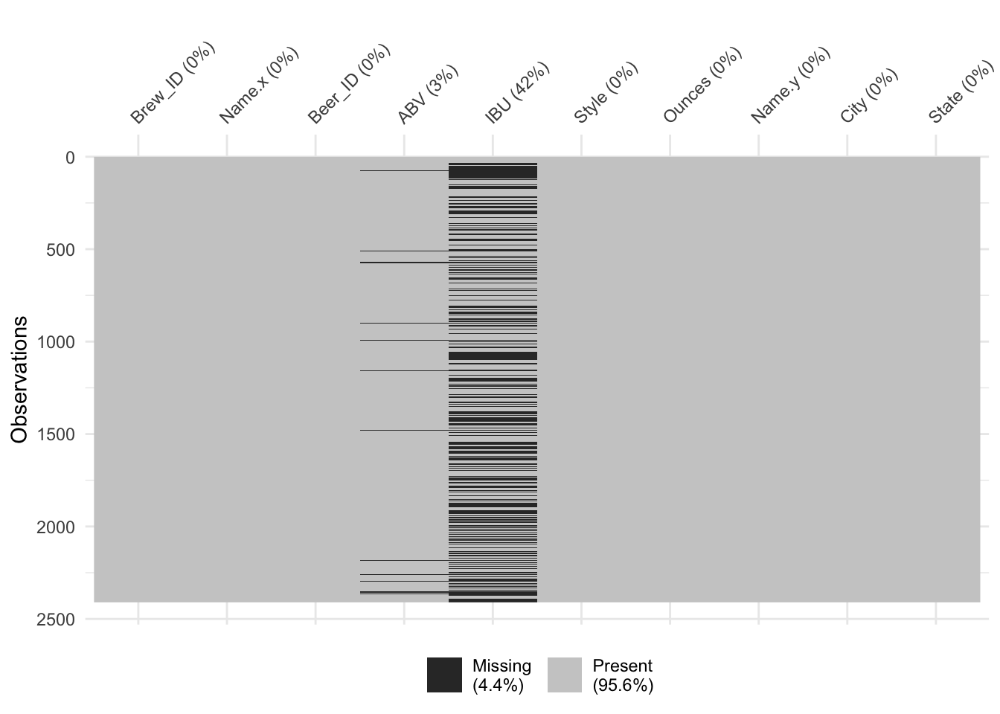
summary(df_bud)## Brew_ID Name.x Beer_ID ABV IBU
## Min. : 1.0 Length:2410 Min. : 1.0 Min. :0.00100 Min. : 4.00
## 1st Qu.: 94.0 Class :character 1st Qu.: 808.2 1st Qu.:0.05000 1st Qu.: 21.00
## Median :206.0 Mode :character Median :1453.5 Median :0.05600 Median : 35.00
## Mean :232.7 Mean :1431.1 Mean :0.05977 Mean : 42.71
## 3rd Qu.:367.0 3rd Qu.:2075.8 3rd Qu.:0.06700 3rd Qu.: 64.00
## Max. :558.0 Max. :2692.0 Max. :0.12800 Max. :138.00
## NA's :62 NA's :1005
## Style Ounces Name.y City
## Length:2410 Min. : 8.40 Length:2410 Length:2410
## Class :character 1st Qu.:12.00 Class :character Class :character
## Mode :character Median :12.00 Mode :character Mode :character
## Mean :13.59
## 3rd Qu.:16.00
## Max. :32.00
##
## State
## Length:2410
## Class :character
## Mode :character
##
##
##
## #Impute NA Values with mean from IBU and ABV columns
df_bud$IBU[is.na(df_bud$IBU)] <- mean(df_bud$IBU, na.rm = TRUE)
df_bud$ABV[is.na(df_bud$ABV)] <- mean(df_bud$ABV, na.rm = TRUE)breweries$State=factor(breweries$State)
breweries_per_state <- breweries %>% group_by(State)%>%tally(name="count")
breweries_per_state## # A tibble: 51 × 2
## State count
## <fct> <int>
## 1 " AK" 7
## 2 " AL" 3
## 3 " AR" 2
## 4 " AZ" 11
## 5 " CA" 39
## 6 " CO" 47
## 7 " CT" 8
## 8 " DC" 1
## 9 " DE" 2
## 10 " FL" 15
## # ℹ 41 more rowsggplot(breweries_per_state, aes(x = State, y = count, fill = State)) +
geom_bar(stat="identity", width=0.7) +
theme(axis.text.x=element_text(angle=45, hjust=1))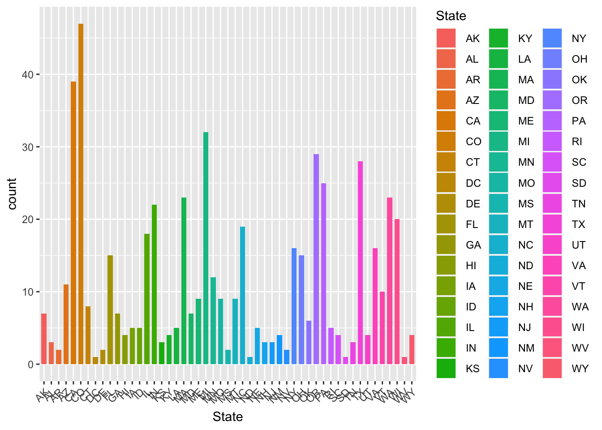
max(breweries_per_state$count)## [1] 47#Build a new dataframe for median alcohol content by state
ABV_Summary_by_State<-aggregate(df_bud$ABV, list(df_bud$State),median)
ABV<-data.frame(ABV_Summary_by_State)
names(ABV)[1]<-"State"
names(ABV)[2]<-"Median_ABV"
# Build a new dataframe for median IBU by state
IBU_Summary_by_State<-aggregate(df_bud$IBU,list(df_bud$State),median)
IBU<-data.frame(IBU_Summary_by_State)
names(IBU)[1]<-"State"
names(IBU)[2]<-"Median_IBU"ggplot(IBU, aes(x=State, y=Median_IBU))+
geom_bar(stat="identity", position="dodge", color="black")+
labs(title="Median Bitterness (IBU) By State", xlab="State",ylab="Median_ABV")+
theme_minimal()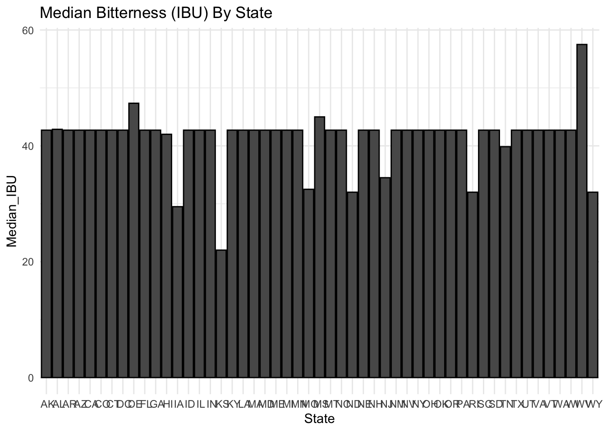
max(IBU$Median_IBU)## [1] 57.5#Median ABV by State
ABV_Plot <- ggplot(ABV, aes(x = factor(State), y = Median_ABV)) +
geom_bar(stat="identity", width=0.9, color="black", position = position_dodge(width = 0.9)) +
labs(title = "Median Alcohol Content by State", x="State", y="Alcohol by Volume (ABV)") +
theme(axis.text.x = element_text(angle = 75, hjust = 1))
print(ABV_Plot)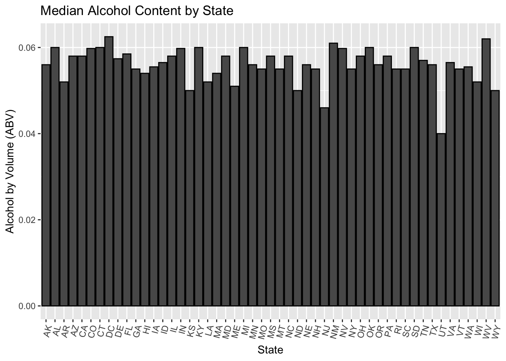
max(ABV$Median_ABV)## [1] 0.0625library(ggplot2)
IBU_Plot <- ggplot(IBU, aes(x = State, y = Median_IBU)) +
geom_bar(stat = "identity", width = 0.7, fill = "blue") + # Adjusted width and added fill color
labs(title = "Median IBU by State") +
theme(axis.text.x = element_text(angle = 45, hjust = 1))
IBU_Plot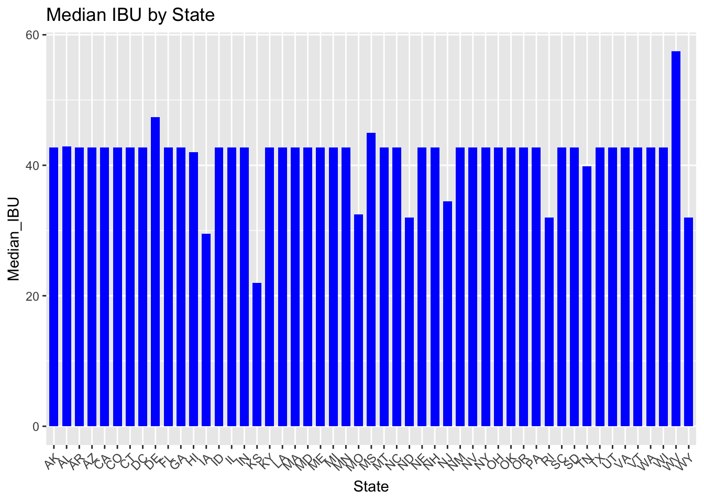
max_abv_row <- df_bud[which.max(df_bud$ABV), ]
# Print the state with the maximum ABV
print("State with Maximum ABV:")## [1] "State with Maximum ABV:"print(max_abv_row$State)## [1] " CO"#State with Max Median ABV
ABV[ABV$Median_ABV==max(ABV$Median_ABV),]## State Median_ABV
## 8 DC 0.0625max_IBU_row <- df_bud[which.max(df_bud$IBU), ]
# Print the state with the maximum ABV
print("State with Maximum IBU:")## [1] "State with Maximum IBU:"print(max_IBU_row$State) ## [1] " OR"IBU[IBU$Median_IBU==max(IBU$Median_IBU),] ## State Median_IBU
## 50 WV 57.5df_bud %>%
ggplot(aes(x = ABV)) +
geom_histogram(binwidth = 0.001, fill = "purple", color = "black", alpha = 0.5) +
geom_density(color = "green") +
labs(title = "Distribution of Alcohol by Volume", xlab="ABV", ylab="Count")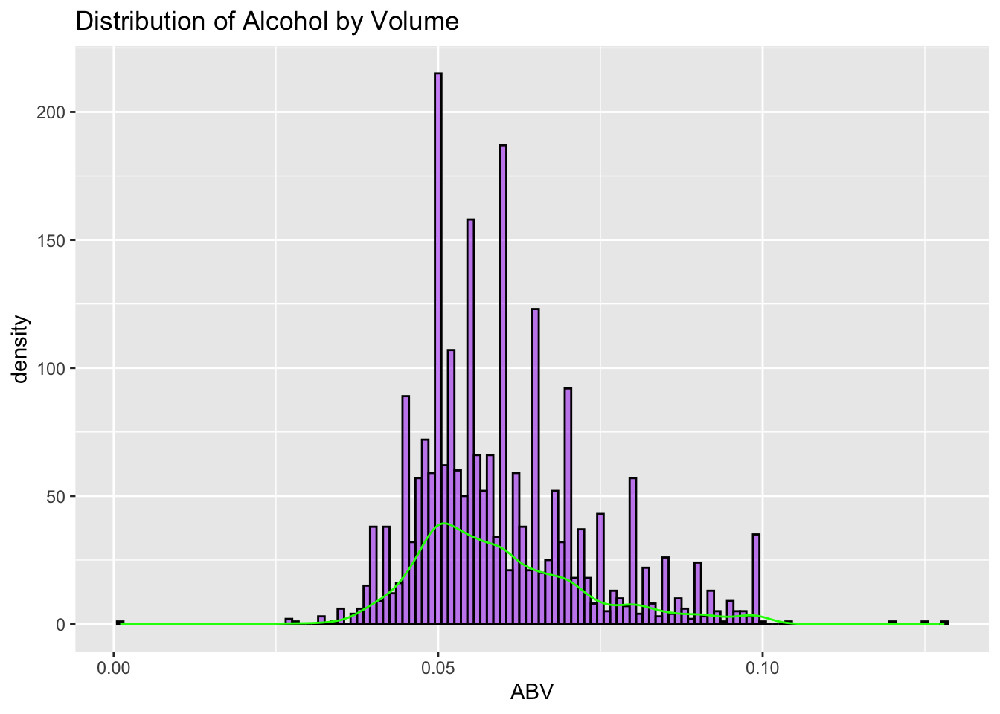 - Here we see that most beers fall around the .05 ABV mark. The distribution is right skewed, and not a normal distribution or bell curve.
#Observations on Bitterness vs ABV:
#ggplot(df_bud, aes(x=ABV, y=IBU, na.rm=TRUE))+ geom_point(aes(color=factor(Style)))+ stat_smooth(method="lm",linewidth=1)
#ggplot(df_bud, aes(x=IBU, y=ABV, na.rm=TRUE))+
#geom_point(aes(color=factor(Style)))+ stat_smooth(method="lm",size=1)+ labs(title="IBU vs ABV")
df_bud %>% ggplot(aes (x=ABV, y = IBU, color = Ounces)) + geom_point(alpha = 0.7) + labs(title = "Scatterplot of ABV v. IBU", x = "ABV", y = "IBU") + stat_smooth(method = 'lm', linewidth = 1)## `geom_smooth()` using formula = 'y ~ x'## Warning: The following aesthetics were dropped during statistical transformation: colour
## ℹ This can happen when ggplot fails to infer the correct grouping structure in the data.
## ℹ Did you forget to specify a `group` aesthetic or to convert a numerical variable into a
## factor?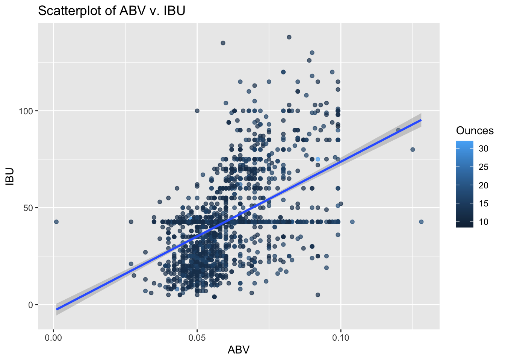 - Here we can see what seems to be a slight positive linear trend showing that as the alcohol content (ABV) increases, the IBU slightly increases as well. There is a constant line also seen, with some outliers too. We can also see that most beers are 10oz. Most beers seem to fall around an ABV of 0.05, supporting what was seen in the distribution of ABV graph.
# We will first filter out all styles that are not Ales
df_Ales <- df_bud %>% filter(grepl("Ale|IPA|PA", Style, ignore.case = TRUE))
#We will classify out filtered beers by "IPA" or "Not_IPA"
df_Ales$Is_IPA <- ifelse(grepl("Indian Pale Ale|IPA", df_Ales$Style, ignore.case = TRUE), "IPA", "Non_IPA")
df_Ales$Is_IPA<-factor(df_Ales$Is_IPA) iterations <- 500
numks <- 10
percentsplit <- 0.8
# Initialize an empty data frame to store results
results_df <- data.frame(accuracy = numeric(0), k = numeric(0))
for (j in 1:iterations) {
trainIndices <- sample(1:nrow(df_Ales), round(percentsplit * nrow(df_Ales)))
train <- df_Ales[trainIndices, ]
test <- df_Ales[-trainIndices, ]
for (i in 1:numks) {
classifications <- knn(train[, c("ABV", "IBU")], test[, c("ABV", "IBU")], train$Is_IPA, prob = TRUE, k = i)
CM <- confusionMatrix(table(classifications, test$Is_IPA))
# Append the accuracy and k value to the results data frame
results_df <- rbind(results_df, data.frame(accuracy = CM$overall["Accuracy"], k = i))
}
}
results_df<-aggregate(results_df$accuracy,list(results_df$k),mean)
results_df_named<-results_df
names(results_df_named) <- c("k", "Average_Accuracy")#We will build an Acc vs K plot to assess optimal k
ggplot(results_df_named, aes(x = k, y = `Average_Accuracy`)) +
geom_line()+
labs(title = "Average Accuracy vs K", xlab="k", ylab="Average Accuracy")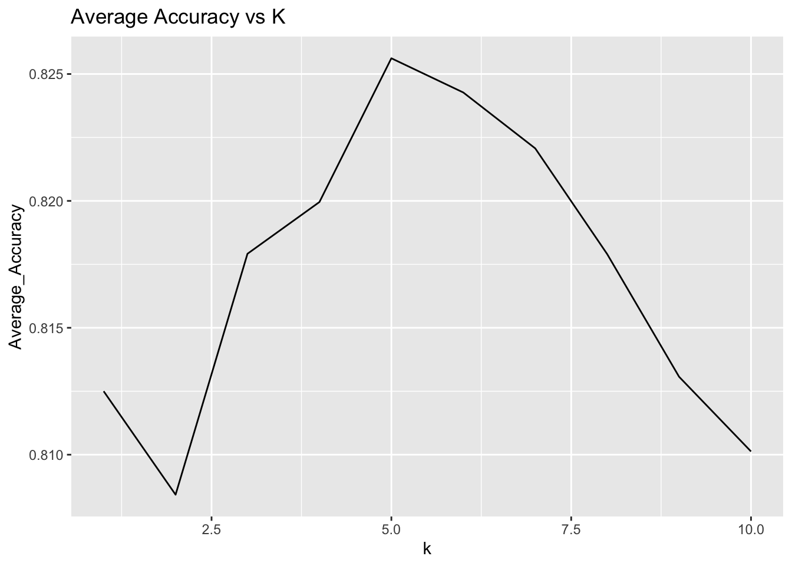
trainIndex <- sample(1:nrow(df_Ales), round(percentsplit * nrow(df_Ales)))
train <- df_Ales[trainIndex, ]
test <- df_Ales[-trainIndex, ]
classifications <- knn(train[, c("ABV", "IBU")], test[, c("ABV", "IBU")], train$Is_IPA, prob = TRUE, k = 5)
CM <- confusionMatrix(table(classifications, test$Is_IPA))
CM## Confusion Matrix and Statistics
##
##
## classifications IPA Non_IPA
## IPA 79 27
## Non_IPA 25 185
##
## Accuracy : 0.8354
## 95% CI : (0.7899, 0.8746)
## No Information Rate : 0.6709
## P-Value [Acc > NIR] : 3.175e-11
##
## Kappa : 0.6292
##
## Mcnemar's Test P-Value : 0.8897
##
## Sensitivity : 0.7596
## Specificity : 0.8726
## Pos Pred Value : 0.7453
## Neg Pred Value : 0.8810
## Prevalence : 0.3291
## Detection Rate : 0.2500
## Detection Prevalence : 0.3354
## Balanced Accuracy : 0.8161
##
## 'Positive' Class : IPA
## # Renu charted ABV associated with different styles of beer
df_bud %>% ggplot(aes(x = ABV, y = State, color = Ounces)) + geom_point(alpha = 0.7) +
labs(title = "ABV by Style", x = "ABV", y = "Style")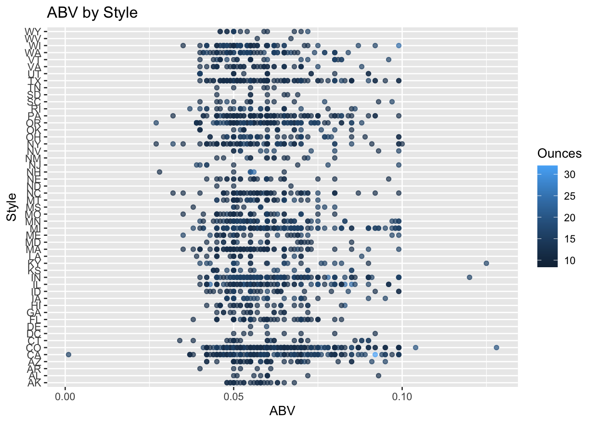 - Here, we can see that beers produced by most states are 10 oz. They also generally fall between a range of 0.05 to 0.07 ABV.
# Renu then charted the average volume in Ounces per beer by State. The results suggest Colorado (CO) produces the largest beers
df_bud %>% ggplot(aes(x = State, color = Ounces)) + geom_bar(alpha = 0.7) +
labs(title = "Ounces by State", x = "State", y = "Ounces") + theme_minimal()## Warning: The following aesthetics were dropped during statistical transformation: colour
## ℹ This can happen when ggplot fails to infer the correct grouping structure in the data.
## ℹ Did you forget to specify a `group` aesthetic or to convert a numerical variable into a
## factor?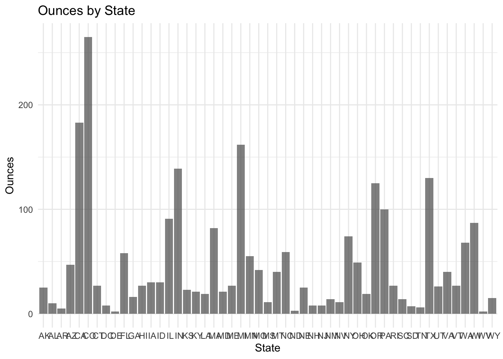 - It looks like Colorado and California produce the beer with the most volume (Oz); they also have the most breweries (as mentioned earlier). We think this would be the top 2 keystone states for production within the US. Something to keep in mind regarding supply chain issues if they were to arise.
# Renu then sought to compare the mean ounces associated with each style of beer
df_bud %>%
ggplot(aes(x = reorder(Style, -Ounces), y = Ounces)) +
geom_bar(stat = "identity", alpha = 0.7) +
labs(title = "Ounces by Style", x = "Style", y = "Ounces") +
theme_minimal() +
theme(axis.text.x = element_text(angle = 45, hjust = 1)) 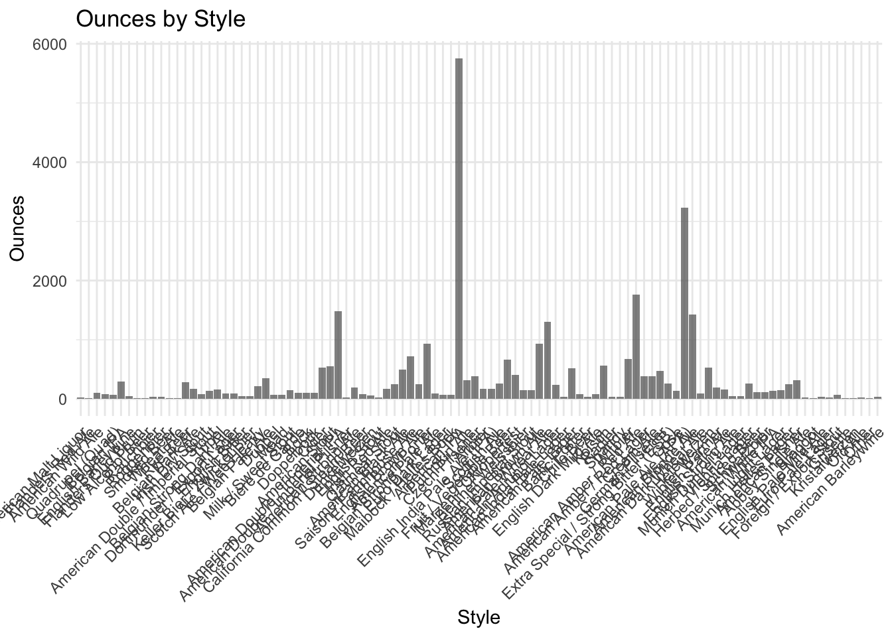
# Joel built a data frame of the % ABV misreports per State
eda_bud<-merge(beers,breweries, by="Brew_ID")
eda_bud<-eda_bud%>%mutate(ABV_Errors=ifelse(is.na(ABV), 1, 0))
eda_bud<-eda_bud%>%mutate(IBU_Errors=ifelse(is.na(IBU), 1,0))
agg_ABV_NA<- aggregate(eda_bud$ABV_Errors, by=list(eda_bud$State), FUN=sum)
colnames(agg_ABV_NA)<-c("State","Brews_With_Missing_ABV")
totalbeers<-(aggregate(eda_bud$ABV_Errors,by=list(eda_bud$State), FUN=length))
colnames(totalbeers)<-c("State","Total_Brews_From_State")
agg_ABV_NA<-data.frame(agg_ABV_NA)
agg_ABV_NA$Percent<-agg_ABV_NA$Brews_With_Missing_ABV/totalbeers$Total_Brews_From_State
ABV_NAs_Per_State<-merge(agg_ABV_NA,totalbeers, by="State")# Joel then built a scatterplot comparing variety of beers produced to percent of ABVs misreported
ggplot(ABV_NAs_Per_State, aes(x = Total_Brews_From_State, y = Percent)) +
geom_point() +
geom_smooth(method=lm)+
labs(x = "Brews Produced", y = "Percentage of Brews With Missing ABVs")## `geom_smooth()` using formula = 'y ~ x'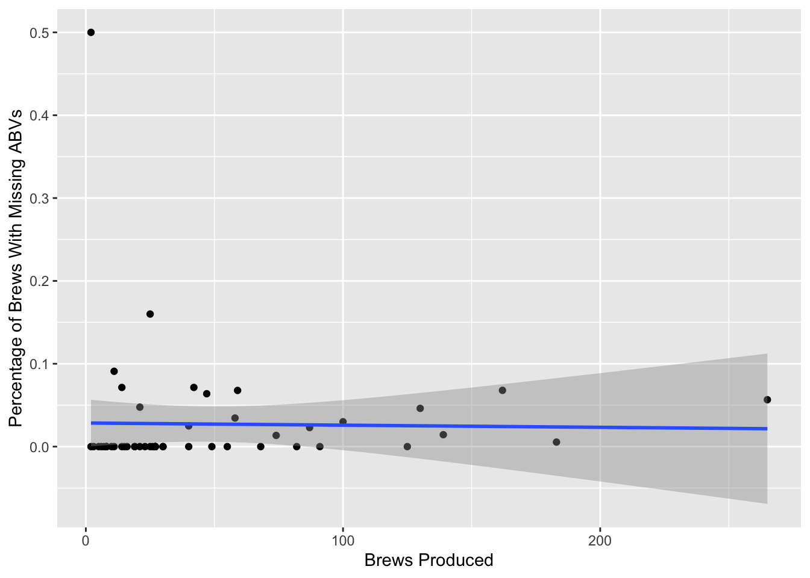 - There is not a clear linear relationship present between the missing values for ABV based on the number or variety of brews produced.
# Joel built a dataframe of the % ABV misreports per State
eda_bud<-merge(beers,breweries, by="Brew_ID")
eda_bud<-eda_bud%>%mutate(ABV_Errors=ifelse(is.na(ABV), 1, 0))
eda_bud<-eda_bud%>%mutate(IBU_Errors=ifelse(is.na(IBU), 1,0))
agg_IBU_NA<- aggregate(eda_bud$IBU_Errors, by=list(eda_bud$State), FUN=sum)
colnames(agg_IBU_NA)<-c("State","Brews_With_Missing_IBU")
totalbeers<-(aggregate(eda_bud$IBU_Errors,by=list(eda_bud$State), FUN=length))
colnames(totalbeers)<-c("State","Total_Brews_From_State")
agg_IBU_NA<-data.frame(agg_IBU_NA)
agg_IBU_NA$Percent<-agg_IBU_NA$Brews_With_Missing_IBU/totalbeers$Total_Brews_From_State
IBU_NAs_Per_State<-merge(agg_IBU_NA,totalbeers, by="State")
head(IBU_NAs_Per_State)## State Brews_With_Missing_IBU Percent Total_Brews_From_State
## 1 AK 8 0.3200000 25
## 2 AL 1 0.1000000 10
## 3 AR 4 0.8000000 5
## 4 AZ 23 0.4893617 47
## 5 CA 48 0.2622951 183
## 6 CO 119 0.4490566 265ggplot(IBU_NAs_Per_State, aes(x = Total_Brews_From_State, y = Percent)) +
geom_point() +
geom_smooth(method=lm)+
labs(title="IBU Misreport Frequency vs Beer Variety", x = "Brews Produced", y = "Percentage of Brews With Missing IBUs")## `geom_smooth()` using formula = 'y ~ x'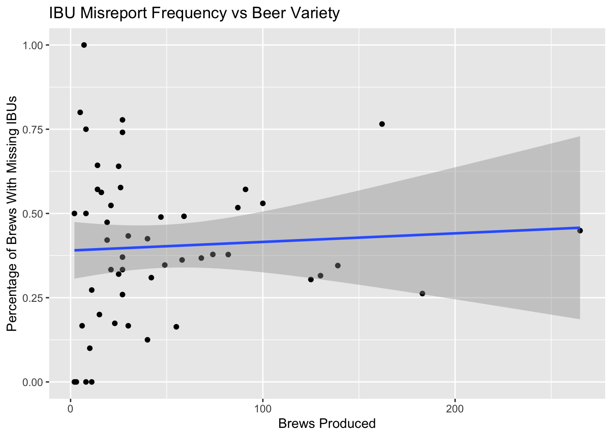 - There is a slightly positive linear relationship present. We cannot determine anything based of a visual, and for the future, could do some regression analysis to investigate and determine if there is a correlation between the percentage of missing IBUs based off the number or variety of brews produced.
This concludes our presentation and analysis. Thank you for your time and we look forward to empowering Budweiser with data-driven wisdom. If you have any questions, please feel free to reach out to any of us, our emails are in the attached PowerPoint presentation. Thank you!